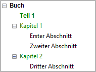

Grundlegende Konzepte
Zusammenfassung
Mit novelibre können Sie Ihren Roman auf drei hierarchischen Ebenen organisieren.
Wenn Sie Ihren Roman kürzen, können Sie einzelne Kapitel und Abschnitte ausblenden, ohne sie gleich zu löschen. Auch können Sie Abschnitte mit alternativem Text verfassen, um später zu entscheiden, was davon Sie in die endgültige Fassung aufnehmen wollen. Dazu bestimmen Sie einen Typ.
Zur Organisation Ihres Schreibprojekts gehört der Überblick über den qualitativen Fortschritt der Arbeit. Mit Hilfe des Abschnitts-Status und von Abschnittsnotizen können Sie das bis auf die Ebene der Abschnitte herunterbrechen.
novelibre bietet eine begrenzte Anzahl von Möglichkeiten, Text hervorzuheben.
Kommentare, Fuß- und Endnoten, die Sie mit Writer einfügen, gehen nicht verloren.
Sprachzuordnungen für die Rechtschreibprüfung in Writer gehen nicht verloren.
Damit Sie nicht durcheinanderkommen, kann novelibre das Projekt gegen Veränderungen sperren, solange Sie mit OpenOffice oder LibreOffice arbeiten.
Die Buch-Hierarchie
Teile
Wir gehen davon aus, dass ein Roman aus Kapiteln und Abschnitten besteht. Teile sind optional; technisch sind sie Kapitel auf der ersten Ebene. Dennoch befinden sie sich im Projektbaum von novelibre auf der selben Ebene wie die Kapitel, doch sie erhalten ihre Überschriften eine Ebene höher. Damit dienen Teile hauptsächlich dazu, zwischen den Kapiteln Überschriften erster Ordung einzufügen, wenn erforderlich.
Hinweis
Sie können Kapitel in Teile umwandeln und umgekehrt, indem Sie einfach ihre Ebene ändern.
Bemerkung
Ein Vorgänger von novelibre war novelyst. Dort sind die Teile auf einer höheren Hierarchieebene als die Kapitel im Projektbaum, so wie es der logischen Vorstellung entspricht. Damit war es möglich, Teile mitsamt ihren untergeordneten Kapiteln zu verschieben, oder gesamte Teile als „unbenutzt“ zu kennzeichnen. In der Praxis erwies sich das jedoch als umständlich. Ich finde es einfacher, nur die Teile-Grenzen zu verschieben und die Kapitelreihenfolge unverändert zu lassen, wenn Teile definiert werden.
Kapitel
Ein novelibre-Projekt muss mindestens ein Kapitel haben. In exportierten Dokumenten haben reguläre Kapitel Überschriften zweiter Ordnung. Für novelibre dienen Kapitel nur als Behälter für Abschnitte, welchen die eigentliche dramaturgische Funktion zugeschrieben wird. Deshalb gibt es nur einige wenige Kapiteleigenschaften einzustellen.
Abschnitte
Bei novelibre gehört der gesamte Textinhalt zu Abschnitten. Abschnitte können Szenen, Erklärungen, Beschreibungen oder erzählerische Zusammenfassungen sein – Sie sind vollkommen frei, wenn es darum geht, den Romantext in Abschnitte zu unterteilen. Es gibt eine Auswahl von Abschnitts-Metadaten zur freien Verwendung.
Im Textkörper der eportieren Dokumente werden Abschnittswechsel per Voreinstellung durch Abschnittstrenner gekennzeichnet, etwa so:
* * *
Wenn Sie allerdings beim Plotten und Organisieren kleinteligere Abschnitte brauchen, als es die Leser später sehen sollen, könne Sie Abschnitte auch ohne Abschnittstrenner als einfache Absätze an den vorherigen Abschnitt anhängen.
Das Bild unten veranschaulicht beide Arten von Abschnittsübergängen. Links sehen Sie einen normalen Übergang mit Abschnittstrenner. Rechts zeigt die feine horizontale Linie, dass ein neuer, angehängter Abschnitt beginnt.

Teil/Kapitel/Abschnittstypen
Jeder Teil, jedes Kapitel und jeder Abschnitt hat einen Typ, den Sie über das Kontextmenü oder das Teil/Kapitel/Abschnitt-Menü ändern können. Der Typ kann Normal oder Unbenutzt sein.
- Normal
„Normale“ Teile, Kapitel und Abschnitte werden gezählt. Ihre Anzahl ist in der Statusleiste zu sehen.
„Normale“ Abschnitte werden ins manuskript exportiert und tragen zur Wortzählung bei.
„Normale“ Teile und Kapitel können untergeordnete Elemente von jedem Typ haben.
„Normale“ Abschnitte werden im Projektbaum entsprechend dem eingestellten Farbgebungsmodus eingefärbt.
- Unbenutzt
Sie können Teile, Kapitel und Abschnitte als unbenutzt kennzeichnen, um sie von der Wortzählung und vom Export auszuschließen.
Die Projektbaum-Unterelemente unbenutzter Teile und Kapitel sind ebenfalls unbenutzt.
Kennzeichnen Sie einen Abschnitt als „Unbenutzt“, bleiben seine sonstigen Eigenschaften erhalten.
Unbenutzte Projektbaumelemente werden in grauer Farbe dargestellt.
Abschnitts-Status
Über das Kontextmenü oder das Abschnitt-Menü können Sie jedem „normalen“ Abschnitt einen Fertigstellungsstatus zuordnen. Zur Auswahl stehen Gliederung, Entwurf, 1. Überarbeitung, 2. Überarbeitung oder Fertiggestellt.
Sie können einen Farbgebungsmodus einstellen, in dem Abschnitte je nach Status in unterschiedlichen Farben dargestellt werden.
Wahlweise können Sie einen Status zur aktuellen Arbeitsphase, erklären und einen Farbgebungsmodus wählen, der Abschnitte hervorhebt, die nicht im Plan liegen.
Neu erstellte Abschnitte erhalten den Status „Gliederung“.
Wortzahlen nach Status erscheinen in den Bucheigenschaften.
Hinweis
Für genauere Angaben dazu, was für einen Abschnitt noch getan werden muss, sind die Abschnittsnotizen in Form von „Haftmerkern“ gedacht.
Figuren und Erzählwelt
Sie können Figuren, Schauplätze und Gegenstände definieren und sie mit Abschnitten in Beziehung setzen, um ihr Vorkommen in der Geschichte zu verfolgen. novelibre speichert auch einige Metadaten dazu, hauptsächlich als praktische Merkhilfe beim Schreiben oder Überarbeiten.
Bemerkung
novelibre ist nicht dafür gedacht, umfangreichen Weltenbau zu dokumentieren. Für so etwas gibt es eine Vielzahl spezialisierter Anwendungsprogramme, Online- und Offline-Wikis, und Notizverwaltungssoftware. novelibre bietet jedoch die Möglichkeit, Bilddateien und Dokumente mit den Figuren, Schauplätzen und Gegenständen zu verlinken, um den Zugriff darauf zu erleichern.
Das nv_zim-Plugin verbindet das Schreibprojekt mit einem Zim Desktop-Wiki. Damit lassen sich die Elemente der Erzählwelt mit entsprechenden Wiki-Seiten verknüpfen.
Wichtig
Um den Abschnitten Perspektiv-Figuren zuweisen zu können, müssen Sie diese zuerst erzeugen.
Text formatieren
Wir setzen voraus, dass ein Romantext nur einige wenige Arten von Textauszeichnung braucht. Beim Import von ODT unterstützt novelibre die folgenden Formate:
Betont-Zeichenvorlage oder Kursivschrift.
Stark betont-Zeichenvorlage oder Fettschrift.
Zitat (Vom Textkörper visuell abgesetzter Absatz).
Ungeordnetes Listenelement (Eingerückter Absatz mit einem Aufzählungszeichen).
Wichtig
novelibre unterstützt keine Kombination von „harten“ Zeichenformaten wie Fett und Kursiv. Wenn novelibre ein ODT-Textdokument importiert, das solche Kombinationen enthält, „gewinnt“ die Kursivschrift in Form der Betont-Zeichenvorlage.
Um sicherzugehen, dass es hier nicht zu Überraschungen kommt, sollten Sie beim Schreiben auf harte Formatierungen verzichten und stattdessen die Zeichenvorlagen Betont und Stark betont einsetzen. Eine Hilfe ist dabei die Erweiterung emph.
Wenn Sie die Zeichenvorlagen Betont und Stark betont kombinieren wollen, weisen Sie der Textpassage zunächst die Vorlage „Stark betont“ zu, und machen Sie sie anschließend kursiv.
Kommentare, Fuß- und Endnoten
novelibre unterstützt ODT-Kommentare, Fußnoten und Endnoten.
Tipp
novelibre bietet keine Unterstützung für Bilder. Sie können dafür Kommentare als Platzhalter benutzen, um sie ganz am Schluss durch die Bilder (oder andere Sonderformatierungen, die nicht durch novelibre abgedeckt sind) zu ersetzen, wenn es darum geht, den fertiggestellten Roman für die Veröffentlichung vorzubereiten.
Über den Umgang mit der Dokumentensprache
ODF-Dokumenten ist üblicherweise eine Sprache zugeordnet, die über die Rechtschreibprüfung und länderspezifische Zeichenersetzung bestimmt. Darüberhinaus erlaubt Writer, Textpassagen andere Sprachen als die Dokumentensprache zuzuweisen, um fremdsprachlichen Text zu kennzeichnen, oder die Rechtschreibprüfung außer Kraft zu setzen.
- Dokument gesamt
Die Projektsprache (Sprachencode gemäß ISO 639-1 und Ländercode entsprechend ISO 3166-2) kann in den Buch-Einstellungen (rechtes Fenster) unter Sprache des Dokuments vorgegeben werden.
- Textpassagen in Abschnitten
novelibre unterstützt die zeichenweise und absatzweise Zuordnung anderer Sprachen.
Projekt-Sperre
Wenn man ein Dokument exportiert, das außerhalb von novelibre bearbeitet werden kann, kann das Projekt automatisch gesperrt werden, um nicht durcheinander zu kommen. Das Verhalten hängt von den Exportoptionen ab.
Wichtig
Das Projekt kann nur gesperrt werden, wenn alle Änderungen gespeichert sind.
Im gesperrten Zustand kann das Projekt nicht über die Benutzerschnittstelle bearbeitet werden. Die Fußleiste wird dann invertiert dargestellt, die Menüeinträge für Dateneingabe, Speichern, Import und Export sind ausgegraut, und die Eingabeelemente im Eigenschaften-Fenster sind deaktiviert. Mit können Sie ein bestehendes Manuskript öffnen, wenn es neuer als die Projektdatei ist.
Die Projektsperre ist nichts weiter als eine starke Merkhilfe.
Sie können das Projekt jederzeit wieder
entsperren .
Sie können es auch von Hand sperren,
fals erforderlich.
Die Schaltfläche  in der Werkzeugleiste
schaltet zwischen gesperrt und entsperrt hin und her.
in der Werkzeugleiste
schaltet zwischen gesperrt und entsperrt hin und her.
Hinweis
Die Projektsperre bleibt auch nach Programmbeendigung erhalten.
Dazu wird automatisch eine Sperrdatei namens .LOCK.<project name>.novx#
angelegt.
Löscht man diese Datei, während novelibre nicht läuft, ist das
Projekt beim nächsten Programmstart entsperrt.